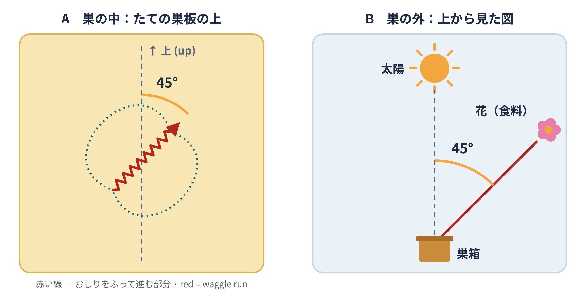

文章：ミツバチのダンスText: The honey bee dance

ミツバチのダンス（英: Waggle dance）は、ミツバチが8の字に歩き回る行動に対して養蜂と動物行動学で使用される専門用語。このようなダンスをすることで、彼らのミツバチの巣の仲間に蜜や花粉、水源や新しい巣の予定地があることを知らせることができる。このようにミツバチのダンスは多様な資源を収集するのに適した場所で他のハチを集めることができる調達を成功させる手段である。
The bee dance (English: waggle dance) is a technical term used in beekeeping and animal behaviour for the behaviour in which honey bees walk around in a figure-eight. By dancing this way, a bee can tell its hive-mates where nectar, pollen, a water source or a possible site for a new nest is located. In this way, the bee dance is a means of successful foraging: it can gather other bees at places suited to collecting various resources.
ダンスの速度は巣から指し示すものの距離が遠くなるにしたがって遅くなる。指し示すものが80ｍ以内の場合、ダンスを速めるために8の字が崩れて円形にダンスをする。そのため、かつては8の字ダンス（遠距離）だけでなく、円形ダンスまたは丸型ダンス（近距離）もあると考えられたが、円形ダンスは8の字ダンスの短縮形であるといえる。
The speed of the dance becomes slower as the distance from the hive to the place being indicated becomes greater. When the place is within 80 m, the figure-eight breaks down and the bee dances in a circle, which makes the dance faster. For this reason, it was once thought that besides the figure-eight dance (for long distances) there was also a separate circle or round dance (for short distances). However, the round dance can be described as a shortened form of the figure-eight dance.
ミツバチのダンスの意味を初めて解読したのは、動物行動学者であるカール・フォン・フリッシュである。
The first person to work out the meaning of the bee dance was the animal behaviour researcher Karl von Frisch.
出典：ウィキペディア日本語版「ミツバチのダンス」（版 111289883、2026年10月28日に閲覧）。CC BY-SA 4.0。図は授業用にかき直したもの。英語訳は授業用。Source: Japanese Wikipedia, "ミツバチのダンス" (revision 111289883, read 28 October 2026), CC BY-SA 4.0. The figure was redrawn for this class; the English translation was made for this class. Wikipedia